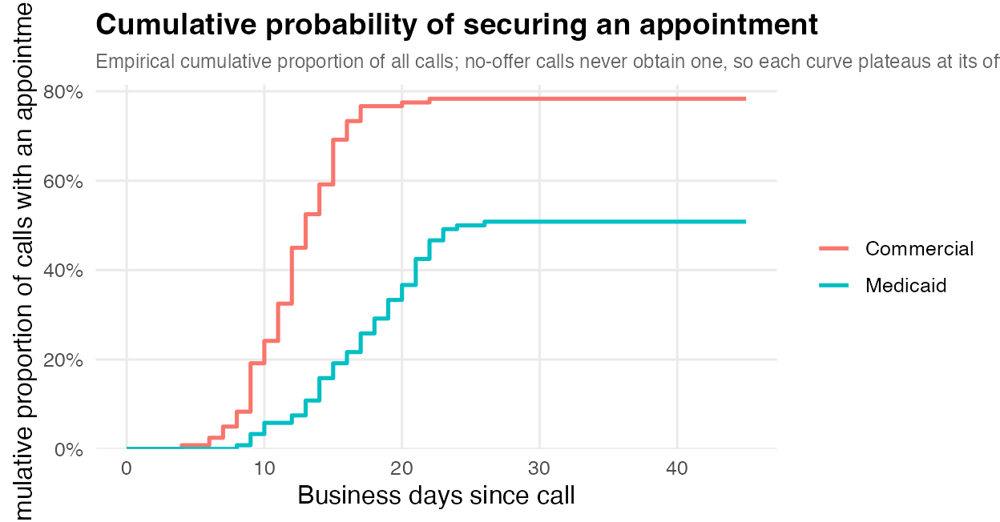

Assembling supplementary digital content
Source:vignettes/supplementary-digital-content.Rmd
supplementary-digital-content.RmdJournals rarely print a mystery-caller study’s full model tables, sensitivity analyses, reporting checklist, and participant-flow diagram in the main text — those go in the supplementary digital content (SDC), uploaded as separate files. This vignette assembles that package: the supplementary tables and figures, a STROBE checklist, and the export steps, each generated from the fitted models so the SDC stays consistent with the manuscript and is trivial to regenerate when the data change.
1. The analysis behind the SDC
A mystery-caller study of insurance-based access has two outcomes: whether an appointment was offered, and the wait in business days among offers. We simulate a small paired call log and fit both models — a logistic GLMM for the offer and a Poisson GLMM for the wait.
set.seed(2026)
n <- 120
d <- data.frame(
npi = rep(sprintf("1%09d", seq_len(n)), each = 2),
insurance = rep(c("Commercial", "Medicaid"), n),
region = rep(sample(c("Northeast", "South", "West"), n, TRUE), each = 2)
)
med <- d$insurance == "Medicaid"
d$appt_offered <- rbinom(nrow(d), 1, plogis(1.1 - 0.9 * med))
d$wait_days <- ifelse(d$appt_offered == 1,
rpois(nrow(d), ifelse(med, 18, 12)), NA)
offer_crude <- mysterycall_logistic_model(d, "appt_offered", "insurance", "npi")
offer_adjusted <- mysterycall_logistic_model(
d, "appt_offered", c("insurance", "region"), "npi")
wait_model <- mysterycall_poisson_model(
d[d$appt_offered == 1, ], outcome = "wait_days",
predictors = "insurance", random_intercept = "npi")2. Supplementary tables
Table S1 — model estimates (crude vs. adjusted).
mysterycall_multi_model_table() places nested models side
by side, the usual “did adjustment move the estimate?” supplementary
table.
tS1 <- mysterycall_multi_model_table(
list(Crude = offer_crude, Adjusted = offer_adjusted))
tS1
#> Multi-model regression table [OR (95% CI)]
#> ------------------------------------------------------------
#> Term Crude Adjusted
#> insuranceCommercial Ref. Ref.
#> insuranceMedicaid 0.29 (0.16-0.50) | p=< 0.001 0.28 (0.16-0.50) | p=< 0.001
#> regionNortheast Ref.
#> regionSouth 1.16 (0.59-2.28) | p=0.669
#> regionWest 1.44 (0.72-2.85) | p=0.299
#> N 240 240
#> AIC 297.8 300.7
#> ------------------------------------------------------------Table S2 — the disparity, with confidence intervals.
tS2 <- mysterycall_disparities_table(d, "appt_offered", "insurance",
ref_group = "Commercial")
tS2
#> Disparity table -- 2 groups | ref: 'Commercial' | wilson 95% CI
#> Group n n_acc Rate 95% CI Abs.Diff RR (95% CI) p-value
#> ----------------------------------------------------------------------------------------------------
#> Commercial 120 94 78.3% 70.1%-84.8% (ref) 1.00 (ref) (ref)
#> Medicaid 120 61 50.8% 42.0%-59.6% -27.5 pp 0.65 (0.53-0.79) p < 0.001Table S3 — adjusted effect on the absolute scale.
mysterycall_combined_results_table() reports the wait
model’s rate ratio alongside the implied difference in days.
tS3 <- mysterycall_combined_results_table(wait_model)
tS3
#> Term IRR IRR 95% CI p-value Days Diff Days 95% CI Significance
#> 1 insuranceMedicaid 1.41 1.30-1.54 < 0.001 <NA> <NA> *Table S4 — this study in the context of prior work.
mysterycall_literature_table() stacks your estimate against
published ones.
prior <- data.frame(
author = c("Pollack 2016", "Sharma 2025"),
year = c(2016, 2025),
insurance_comparison = "Medicaid vs Commercial",
n = c(1200, 480),
or = c(0.42, 0.55), ci_lower = c(0.35, 0.40), ci_upper = c(0.51, 0.75),
specialty = c("Urology", "OBGYN"))
mysterycall_literature_table(prior)
#>
#> -- Mystery-caller literature comparison (2 studies) --
#>
#> Author Year Specialty Comparison N OR (95% CI)
#> Pollack 2016 2016 Urology Medicaid vs Commercial 1200 0.42 (0.35-0.51)
#> Sharma 2025 2025 OBGYN Medicaid vs Commercial 480 0.55 (0.40-0.75)
#> Direction
#> Disparity detected
#> Disparity detected
#>
#> OR range: 0.42-0.55
#>
#> Discussion sentence:
#> Across 2 mystery-caller studies, ORs for Medicaid vs Commercial ranged from 0.42-0.55.A one-file bundle.
mysterycall_supplemental_tables() writes every model table
into a single formatted workbook for upload (needs the openxlsx
package).
xlsx <- mysterycall_supplemental_tables(
logistic_fit = offer_adjusted, poisson_fit = wait_model,
file = file.path(sdc_dir, "supplemental_tables.xlsx"), overwrite = TRUE)
basename(xlsx)
#> [1] "supplemental_tables.xlsx"3. Supplementary figures, at journal specification
Figure S1 — forest plot of the offer model.
figS1 <- mysterycall_forest_plot(offer_adjusted, x_label = "Odds ratio (95% CI)")
figS1
Figure S2 — incidence-rate-ratio plot of the wait model.
mysterycall_irr_plot(wait_model)
Figure S3 — cumulative time to an appointment, the correct single-contact time-to-event display:
curve <- mysterycall_cumulative_access_curve(
d, time_col = "wait_days", offered_col = "appt_offered",
group_col = "insurance", horizon = 45, plot = TRUE)
curve$plot
Save at the journal’s column width.
mysterycall_save_green_journal_figure() writes a figure at
Obstetrics & Gynecology specifications (sized to a single
or double column, at print DPI) and returns the path.
paths <- mysterycall_save_green_journal_figure(
figS1, file.path(sdc_dir, "figS1_forest"), layout = "single_column")
basename(paths)
#> [1] "figS1_forest.tiff" "figS1_forest.pdf" "figS1_forest.png"
#> [4] "figS1_forest_data.csv"4. The reporting checklist
Observational studies ship a STROBE checklist.
mysterycall_strobe_checklist() builds one from the fitted
model, pre-filling the items it can verify:
head(mysterycall_strobe_checklist(wait_model), 8)
#> STROBE Checklist for Mystery-Caller Study
#> ==================================================
#> [WARN] Item 1 Title/Abstract: Study design stated in title or abstract
#> Cannot auto-detect; verify manually.
#> [WARN] Item 2 Introduction: Scientific background and objectives stated
#> Cannot auto-detect; verify manually.
#> [WARN] Item 3 Methods: Setting, locations, and dates described
#> Cannot auto-detect; verify manually.
#> [WARN] Item 4 Methods: Eligibility criteria for participants stated
#> Cannot auto-detect; verify manually.
#> [WARN] Item 5 Methods: Mystery-caller protocol described (script, blinding, call timing)
#> Cannot auto-detect; verify manually.
#> [WARN] Item 6 Methods: Sample size justified
#> No power/sample_size field found. Verify that a power analysis is reported.
#> [PASS] Item 7 Methods: Statistical methods: model family specified
#> Model class 'mysterycall_poisson_model' detected; model family is unambiguous.
#> [PASS] Item 8 Methods: Physician random intercepts included and stated
#> Random-effects term detected in model formula.
#>
#> Summary: 2 PASS, 6 WARN, 0 FAILThe participant-flow diagram (a near-universal Figure S1) comes from
mysterycall_flowchart() /
mysterycall_strobe_flow(); it renders with the DiagrammeR
package:
mysterycall_flowchart(
counts = c("Sampled" = 240, "Reached" = 226, "Analyzed" = 218))5. Export for upload
Each table can be written in whatever format the journal wants. A CSV per table is the most portable:
write.csv(as.data.frame(tS1), file.path(sdc_dir, "TableS1_models.csv"),
row.names = FALSE)
write.csv(tS2, file.path(sdc_dir, "TableS2_disparities.csv"), row.names = FALSE)For a formatted Word document (with a results paragraph on top), use
mysterycall_export_results_docx() — it needs the
officer/flextable packages:
mysterycall_export_results_docx(
table = tS2, title = "Table S2. Insurance-based access disparities",
output_path = file.path(sdc_dir, "TableS2.docx"))6. A manifest
Finally, list what the SDC package contains — reviewers appreciate a manifest, and it doubles as a build check.
files <- list.files(sdc_dir)
data.frame(
file = files,
kind = ifelse(grepl("\\.csv$", files), "table",
ifelse(grepl("\\.(png|pdf|tiff)$", files), "figure", "bundle")))
#> file kind
#> 1 figS1_forest_data.csv table
#> 2 figS1_forest.pdf figure
#> 3 figS1_forest.png figure
#> 4 figS1_forest.tiff figure
#> 5 supplemental_tables.xlsx bundle
#> 6 TableS1_models.csv table
#> 7 TableS2_disparities.csv tableRecap
Every piece of a mystery-caller study’s supplementary digital content — the crude-vs-adjusted model table, the disparity table, the absolute-scale effect, the literature comparison, the forest / IRR / cumulative-access figures at journal specification, the STROBE checklist, and the export to workbook / Word / CSV — comes from the same fitted models with one call apiece, so the SDC regenerates itself whenever the analysis is re-run.